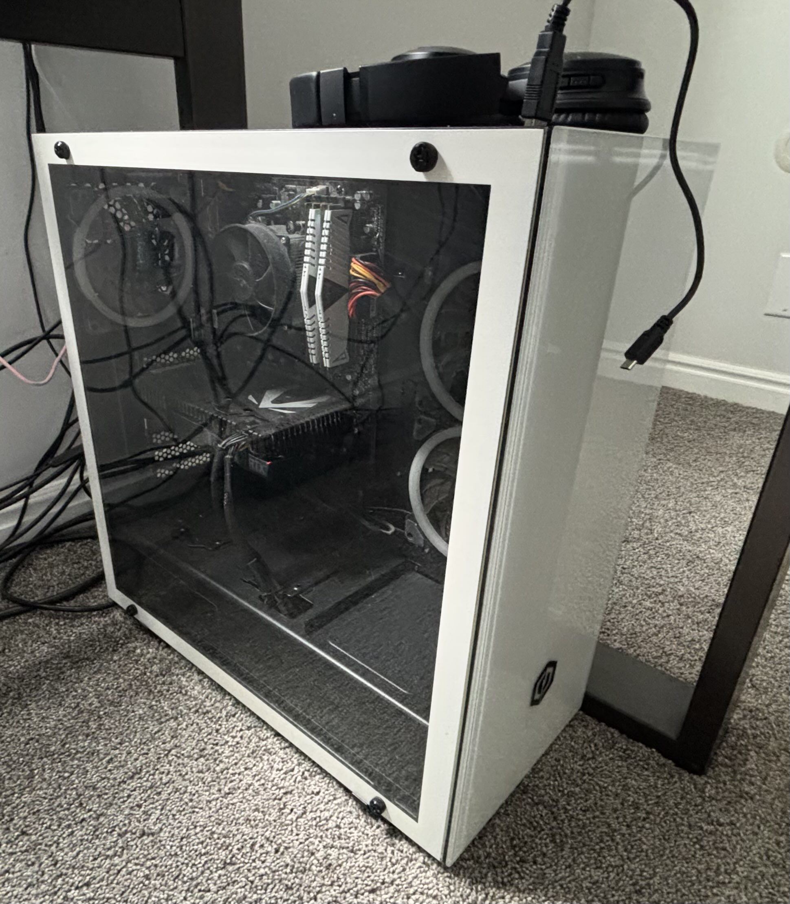
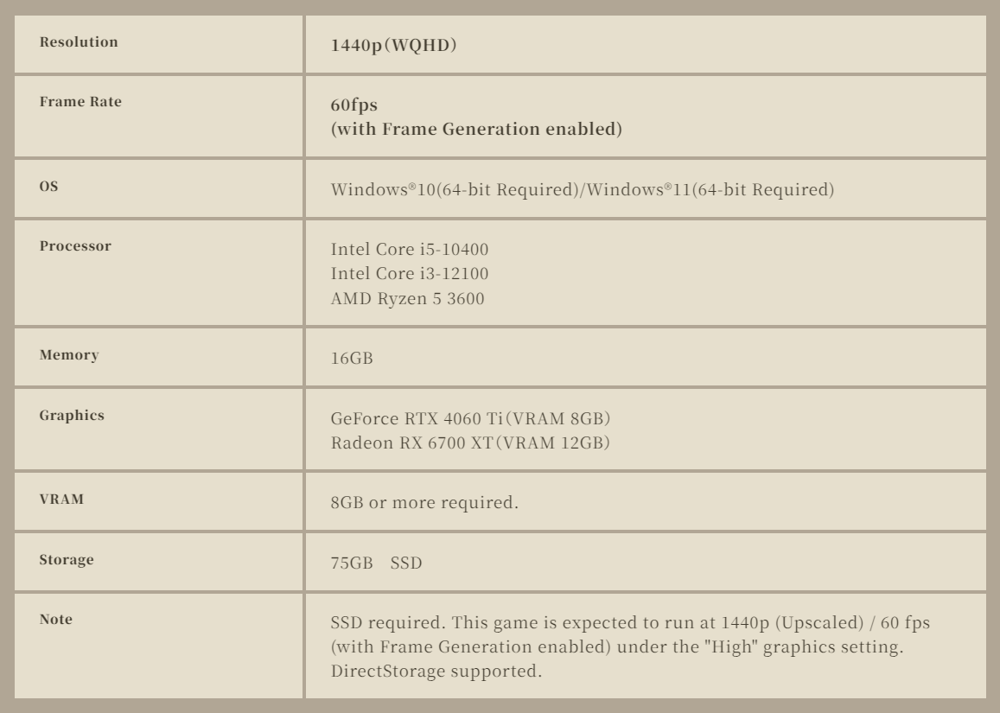

This is a webpage documenting my current PC build I am working on :). Most parts have been ordered and it will be completed soon!
I started planning in September of last year, and started making purchases in October.
I am now nearly done with it in March of 2025,
and it should be fully built by April!

I've always been into PC gaming, but only now recently got into the more technical side and started to learn more about PC building.
My current computer is sadly starting to show its age; being 5 years old and not using an SSD, it struggles with most modern games and programs.
Because I've decided to change my career path in life from psychology to programming/illustrator, I decided I would use this as an excuse to
finally build a new computer!
| Component | Choice | Cost |
|---|---|---|
| GPU | Gigabyte GAMING OC Radeon RX 7800 XT 16 GB Video Card | $550 | CPU | AMD Ryzen 5 7600X 4.7 GHz 6-Core Processor | $220 |
| Motherboard | NZXT N7 B650E ATX AM5 Motherboard | $200 |
| RAM | G.Skill Flare X5 32 GB (2 x 16 GB) DDR5-6000 CL30 Memory | $100 |
| Storage | Crucial P3 Plus 2 TB M.2-2280 PCIe 4.0 X4 NVME Solid State Drive | $120 |
| CPU Cooler | Thermalright Peerless Assassin 120 SE 66.17 CFM CPU Cooler | $35 |
| Power Supply | NZXT C850 (2024) 850 W 80+ Gold Certified Fully Modular ATX Power Supply | $120 |
| Case | NZXT H9 Flow ATX Mid Tower Case | $140 |
| Total Cost | $1485 |
Another reason I wanted to upgrade my PC is because a new game in my favorite series was announced, Monster Hunter!
Though with my current
PC being from when the last game was released, I knew it was time to get something new. While I planned to upgrade shortly after the announcment
in September,
I wasn't too comfortable with the idea of building PCs and thought of having my more technical friends build one for me, while
I supplied the parts.

Used as a basic reference when making my parts list
What made me deiced to fully commit to building a PC was something more personal however.
During my first semester of college, I had a career crisis
and decided that my current major of Psychology wasn't suited for me anymore.
Despite having no previous technical knowledge, I decided to switch my
major to Computer Science, with the hopes of learning how to program
and combining this with my love of art to become a Game Designer!
Alongside this build, I bought a drawing tablet to help me start learning digital drawing!
I chose the Huion 13 tablet because it was a nice beginner
budget option, but still had the features I wanted from a tablet.